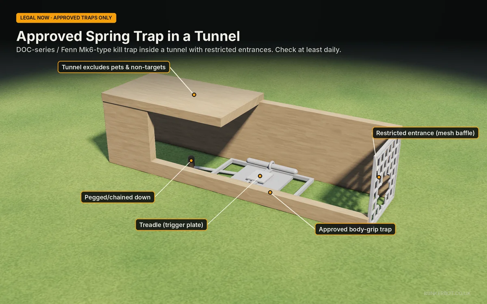
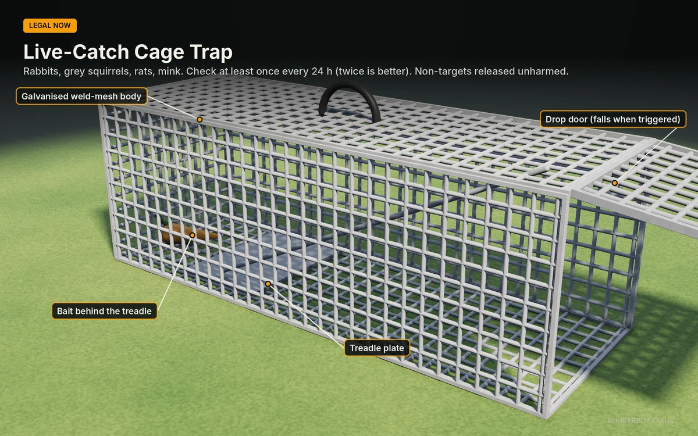
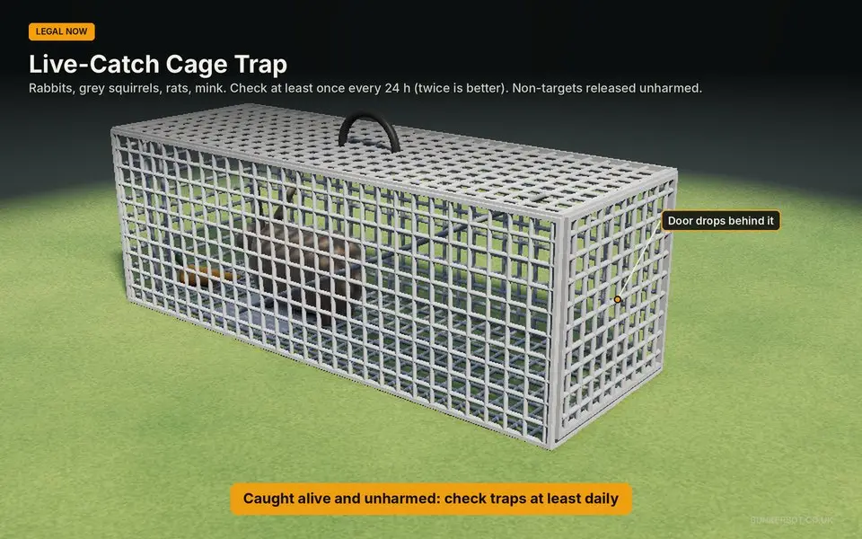
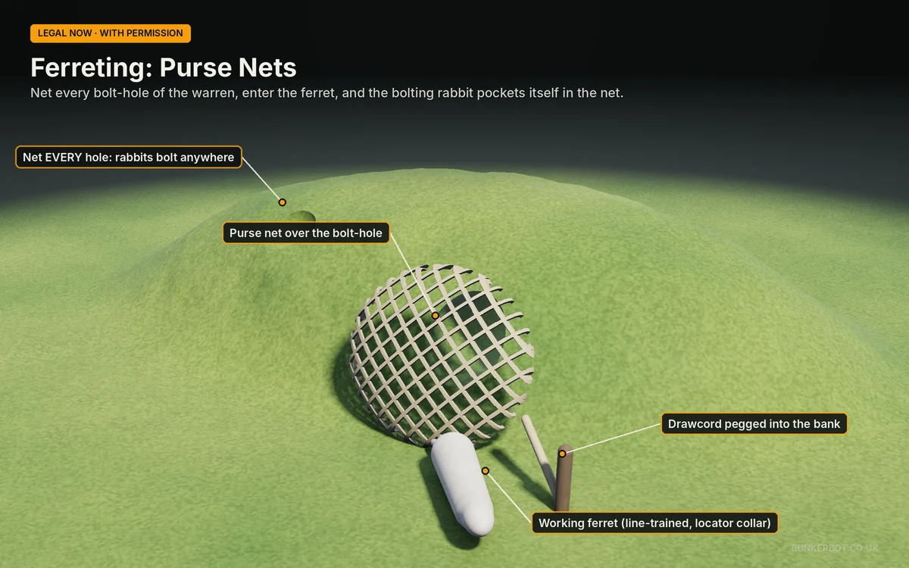
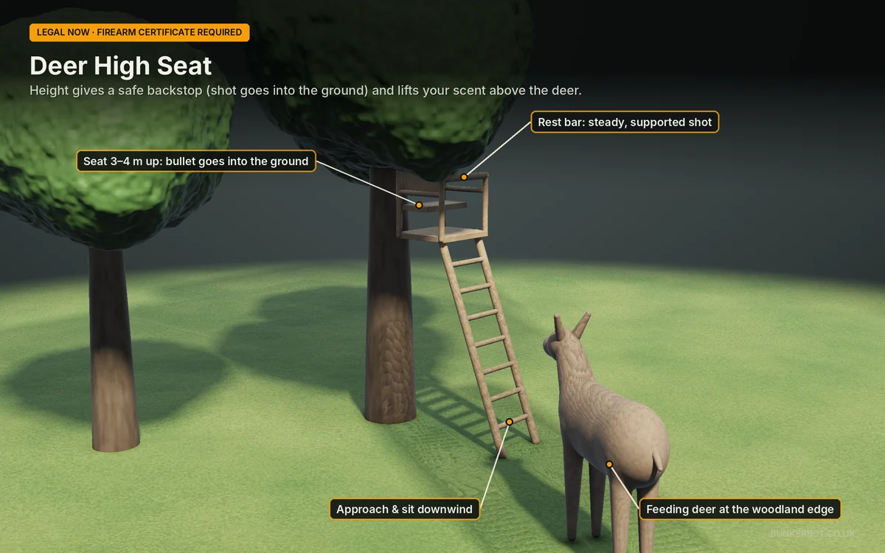
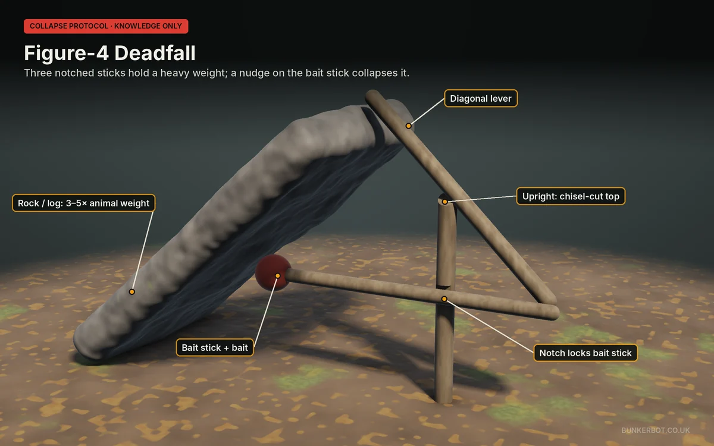
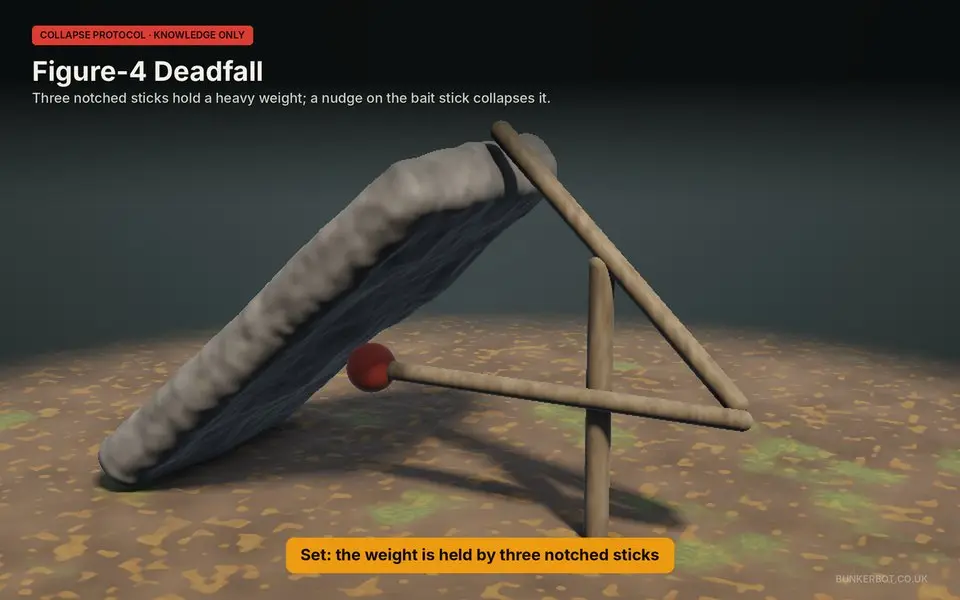
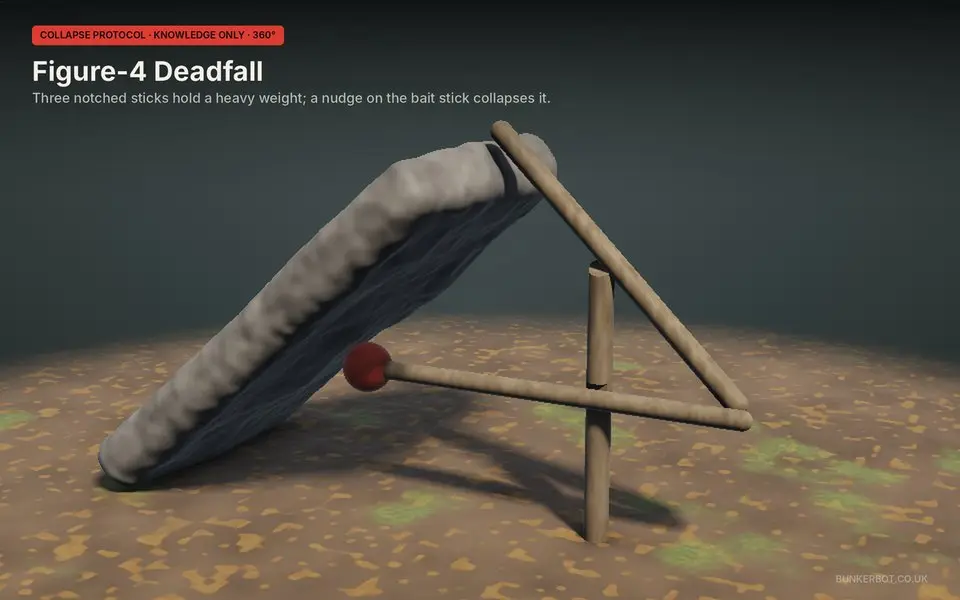
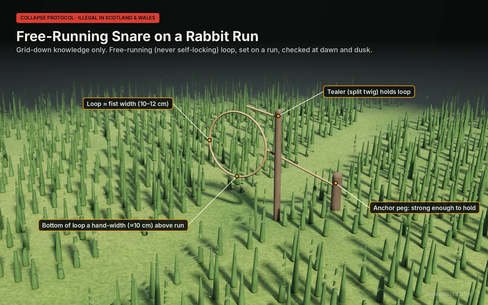
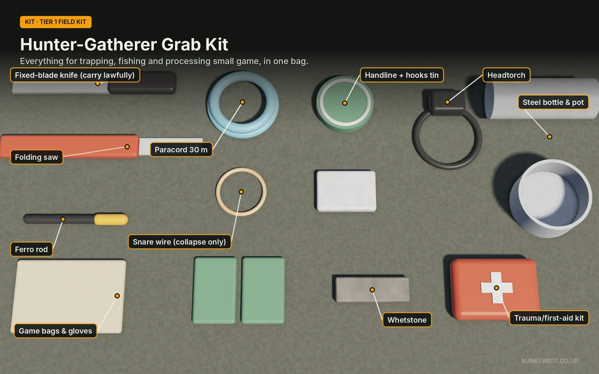

UK Survival Hunting & Trapping
What you can take from British land, where it lives, how to catch it — legally now, and when the grid is down.
Every method on this page is tagged.
🟢 LEGAL NOW: practise this today, with landowner permission and the right certificate. 🔴 COLLAPSE PROTOCOL: knowledge for a long-term grid-down situation only. These methods are illegal or tightly restricted in the UK today. Learn how they work; do not set them. This is general guidance, not legal advice. Law differs between England, Wales, Scotland and Northern Ireland, and it changes. Check before you act.
1. The Rules That Matter
You need landowner permission for everything here. There is no "right to hunt" on open-access land, footpaths or common land.
| Rule | What it means |
|---|---|
| Banned weapons | Bows, crossbows and explosives cannot be used to hunt in the UK. |
| Air rifles | Up to 12 ft·lb need no certificate in England & Wales. Over 12 ft·lb needs a Firearm Certificate (FAC). In Scotland every air weapon needs an Air Weapon Certificate. In Northern Ireland, almost all air guns need an FAC. |
| Shotguns | Shotgun Certificate (SGC) from your police force. |
| Rifles | FAC, with each calibre and its use (e.g. "deer, fox, vermin") approved. |
| Snares | Banned in Scotland and Wales. Still legal in England (free-running only, under the Code of Practice), but the government has committed to a ban. Treat them as collapse-only. |
| Spring traps | Only models named in the Spring Traps Approval Order, only for the listed species, and usually only inside a tunnel. |
| Wild birds | All protected, except listed quarry species in season or pest species under a general licence (England: GL42 for serious damage to crops etc.). Licences are re-issued yearly, so read the current one. |
| Dogs | Hunting Act 2004 (England & Wales): hunting mammals with dogs is banned, but rabbits and rats are exempt. Lurchers and ferrets on rabbits are legal with permission. |
| Deer | Close seasons; legal calibres; no shooting at night without a licence; no chasing with vehicles. |
| Game: Sundays & night | In England & Wales you may not shoot game birds or hares on a Sunday or Christmas Day, nor game at night (roughly 1 hour after sunset to 1 hour before sunrise). Rabbits and pigeons under general licence are not "game" for this rule. |
| Lead ammunition | Now law (GB): the REACH (Amendment) Regulations 2026 ban the sale and use of lead shot and large-calibre lead bullets for live quarry from 1 April 2029 (outdoor ranges from 1 April 2028 unless they meet set conditions). Lead shot is already banned over wetlands, and in England and Wales for all ducks, geese, coot and moorhen wherever they are shot. Airgun pellets are not covered. Switch to steel, bismuth or tungsten shot and copper bullets now. |
Getting permission on one farm is worth more than any gun. Offer free rabbit, squirrel and pigeon control, carry insurance (BASC or similar membership includes it), and show up reliably. Then permissions multiply.
2. UK Quarry: What, Where, When
Mammals
| Species | Where in the UK | Habitat & sign | Season (England & Wales) | Survival value |
|---|---|---|---|---|
| Rabbit | Everywhere except the highest ground | Light, sandy soils, hedge banks, field margins. Look for burrows, scrapes, droppings (latrines), runs through grass. | No close season | ★★★★★ The UK staple. ~0.8–1 kg meat. Lean: add fat (see §12). |
| Brown hare | Lowland arable, especially East Anglia, Lincolnshire, Wiltshire downs | Open fields, "forms" (shallow scrapes) in grass | No statutory close season in England & Wales yet (sale banned Mar–Jul). Scotland: close season 1 Feb–30 Sep. A Feb–Sep close season is proposed in England (bill before Parliament) and Wales (consultation). BASC code: don't cull 1 Mar–31 Jul except for serious crop damage. | ★★★ 2.5–4 kg. Shoot sparingly: populations are declining. |
| Mountain hare | Scottish Highlands | Heather moorland | Protected in Scotland: licence only | ✗ Leave alone |
| Grey squirrel | England, Wales, central & southern Scotland | Deciduous woods, parks, conifer plantations. Look for dreys and stripped cones. | No close season. Invasive: illegal to release once caught. | ★★★★ Tender, ~300 g meat, plentiful. Red squirrels are fully protected: learn the difference. |
| Roe deer | Almost everywhere; most common UK deer | Woodland edges, young plantations, farmland. Dawn/dusk feeders. | Bucks 1 Apr–31 Oct; does 1 Nov–31 Mar | ★★★★★ 10–15 kg venison |
| Fallow deer | Southern & central England, Wales, parks (New Forest, Cannock Chase, Forest of Dean) | Mixed woodland, herds | Bucks 1 Aug–30 Apr; does 1 Nov–31 Mar | ★★★★★ 25–40 kg venison |
| Red deer | Scottish Highlands, Exmoor, Quantocks, Lake District, Thetford | Hill and forest | Stags 1 Aug–30 Apr; hinds 1 Nov–31 Mar | ★★★★★ 40–90 kg (needs a team & vehicle) |
| Sika | Dorset (Purbeck), Scotland, NW England | Conifer forest, wet ground | As red deer | ★★★★ |
| Muntjac | Southern, central & eastern England, spreading | Dense scrub, bramble, gardens | No close season. Breeds year-round, so to avoid orphaning young, BDS advises taking only immature or heavily pregnant does. | ★★★ 6–9 kg, easy to handle |
| Chinese water deer | Bedfordshire, Cambridgeshire, Norfolk Broads | Reedbeds, wet fields | 1 Nov–31 Mar | ★★★ |
| Wild boar (feral) | Forest of Dean, pockets in the South East & Scotland | Rooted-up ground, wallows | No statutory season. Rifle, landowner control. | ★★★★ Dangerous: experienced stalkers only |
male deer have no close season since October 2023. Red, sika and fallow females: 21 Oct–15 Feb. Muntjac and water deer aren't recognised in Scottish deer law. Check NatureScot before you stalk.
Birds
| Species | Where | Season | Notes |
|---|---|---|---|
| Woodpigeon | Everywhere arable: rape, peas, drilled fields, ivy in winter | Controlled under general licence (England GL42) to prevent serious crop damage | ★★★★★ The most numerous large bird in the UK. Dark, rich breast meat. |
| Pheasant | Farmland woods across lowland Britain | 1 Oct–1 Feb | ★★★★ Mostly released birds, so they stay near release pens and feeders |
| Red-legged & grey partridge | Eastern arable | 1 Sep–1 Feb | ★★★ Grey partridge is red-listed: many estates don't shoot them |
| Red grouse | Heather moorland, N England & Scotland | 12 Aug–10 Dec | ★★★ Driven-shoot country: permission is expensive |
| Mallard, teal, wigeon | Rivers, lakes, estuaries, flight ponds | Inland 1 Sep–31 Jan; below high-water mark to 20 Feb | ★★★★ |
| Canada & greylag goose | Lakes, gravel pits, grass fields | As ducks | ★★★★ Big birds (3–5 kg) |
| Woodcock / snipe | Woods (winter) / wet fields | Woodcock (England & Wales) 1 Oct–31 Jan; snipe 12 Aug–31 Jan | ★★ Woodcock is in decline: best left alone |
Rats (Weil's disease), corvids (legal pest control, but poor, risky meat), foxes (parasites, poor meat), and anything found dead.
3. Fieldcraft Basics
- Wind is everything. Always approach with the wind in your face. Carry a puffer bottle or a pinch of dry dust to check it.
- Dawn and dusk are when rabbits, deer and pigeons move. Midday is for walking and scouting.
- Read sign before you hunt. Fresh droppings, tracks in mud, nibbled crops, hair on wire, runs worn through grass, slots (deer tracks) and fraying on saplings.
- Move slowly. Stop often. Ten steps, then look for a minute. Movement gives you away, not shape.
- Break your outline. Dull clothing, gloves, face veil, and stay off skylines.
- Use cover and hides. For pigeons, build a hide on the flight line between roost woods and feeding fields, and set decoys facing into the wind.
- Know your backstop. Never shoot unless you know exactly where the projectile will stop.
4. Legal Trapping Legal now
Trapping is passive food: traps work while you do other jobs. Legally in the UK you have two families of trap:
4a. Approved spring traps (kill traps)

- Which: Only models on the Spring Traps Approval Order for your country (e.g. DOC 150/200/250, Fenn Mk4/Mk6, Tully, Goodnature A18/A24). Each is approved only for listed species, e.g. grey squirrel, rat, weasel, mink, rabbit. Since April 2020 only AIHTS-tested traps (DOC series, Tully, Goodnature A24) may be used for stoats. Fenn-type traps can no longer be set for stoats.
- Rabbits: Fenn Rabbit Trap Mk I (or other approved models), set in the burrow mouth only where the Order allows.
- Set in a tunnel made of untreated timber, about 75 cm long, with a mesh or baffle at the entrance sized to the target.
- Check at least once a day, ideally at first light.
- Bait isn't usually needed: tunnels on natural runs (walls, ditch crossings, logs over streams) catch by guiding animals through. For squirrels, use a little whole maize in squirrel-specific traps.
- Never use gin/leghold traps (illegal since 1958) or any trap not on the list.
4b. Live-catch cage traps


- Legal for: rabbits, grey squirrels, rats, mink. It is illegal to release grey squirrels or mink once caught (non-native invasive species), so they must be humanely dispatched.
- Check at least every 24 h (twice daily is better). Provide cover/bedding if left overnight.
- Release non-targets unharmed and immediately.
- Dispatching: grey squirrels cannot legally be released. Coax the squirrel into a hessian sack or cone and dispatch instantly with a firm blow to the head, or shoot it with an air rifle at point-blank range into the brain, aimed safely downward.
- Set on runs, along walls and hedge bottoms. Pre-bait for a few days with the door wired open so animals lose their fear.
Trap-line routine
- Set 10–20 traps across a line you can walk in an hour.
- Mark each one with a GPS waypoint and a tag (in many places you must label traps with your name).
- Walk the line at dawn, every day, no exceptions.
- Record catches. Move traps that catch nothing after 5 days.
5. Ferreting & Netting Rabbits Legal now

Ferreting is one of the most productive legal ways to fill a pot: a good day on a big warren can yield 10–30 rabbits.
Kit: 1–2 working ferrets (jills are smaller, faster workers), carry box, 30–50 purse nets (1 m), locator collar and finder, a spade/graft and probing bar, priest (club), game bag.
Method:
- Go in winter (Oct–Mar). Vegetation is down and there are no young rabbits underground.
- Approach quietly from downwind. Don't stamp: rabbits that hear you won't bolt.
- Net every hole, including hidden bolt-holes 10–20 m away. Peg each drawcord firmly.
- Enter the ferret into a hole on the downwind side.
- When a rabbit hits the net, the purse closes. Kneel on it, remove it, dispatch it, reset the net.
- If the ferret lies up (kills underground and stays), use the locator to dig down.
Long-netting: a 50–100 m net set at night between the rabbits' feeding field and their warren. Then drive them in. Very effective; needs practice and two people.
Lurchers/longdogs: legal on rabbits. A good dog plus a lamp (with permission) is an old poacher's method made legal.
6. Air Rifle: The Survival Workhorse Legal now
For most UK preppers, the sub-12 ft·lb .22 PCP air rifle is the best value food-gathering tool you can own legally without a certificate (England & Wales).
| Item | Recommendation |
|---|---|
| Calibre | .22 for hunting: heavier pellet, more energy delivered. .177 shoots flatter, if you prefer that. |
| Power | Just under the 12 ft·lb legal limit. Get it chronographed. |
| Type | PCP (pre-charged) for accuracy and quiet. Spring rifles need no air supply, which is a collapse advantage. |
| Scope | 3–9×40 or 4–12×44 with good low-light glass |
| Range | Head-shots only, 15–35 m. Zero at 30 m. |
| Quarry | Rabbits, grey squirrels, woodpigeon (under general licence), rats |
At 12 ft·lb, the clean-kill zone is about a 2.5 cm circle: the brain on rabbits and squirrels, head or heart/lung on a pigeon from below. Practise until you can hit a 2.5 cm circle 10 times out of 10 at your maximum range.
A springer or a PCP with a hand pump needs no electricity or ammunition supply chain. 5,000 pellets weigh about 2.5 kg and will last years.
7. Shotgun & Rifle Legal now (certificate required)
Shotgun (SGC)
- 12-bore is the standard: ammunition is everywhere. 20-bore is lighter.
- Covers pigeon, rabbit, duck, goose, pheasant, squirrel, i.e. everything that moves fast.
- Use non-lead shot for all live quarry. Lead shot and large-calibre lead bullets for live quarry are banned in GB from 1 April 2029 (REACH (Amendment) Regulations 2026), and lead shot is already illegal over wetlands. Steel shot suits most modern 12-bores (check the proof marks); bismuth or tungsten for older guns.
- Effective range ~35 m (pattern-test your gun).
Rimfire & centrefire (FAC)
- .22 LR (moderated): quiet, cheap, 50–80 m on rabbits. Arguably the best food-gathering rifle in the UK.
- .17 HMR: flatter shooting, 100–150 m on rabbits, but it damages more meat.
- Deer-legal calibres: .243 Win (all UK species), 6.5 Creedmoor, .308 Win. These are the "one gun for everything" choices.
- Applying for an FAC: good reason (e.g. land with written permission), references, medical check, secure gun cabinet, police home visit. Allow 3–6 months.
8. Deer Stalking Legal now (FAC + training)

One roe deer feeds one person for about 2–3 weeks. Deer are the UK's biggest legal source of wild meat, and numbers are high enough that culling is actively needed.
Legal minimums (England & Wales)
| Species | Min. calibre | Min. muzzle energy | Bullet |
|---|---|---|---|
| All deer | .240 in | 1,700 ft·lb | Expanding (soft or hollow point) |
| Muntjac & Chinese water deer only | .220 in | 1,000 ft·lb | ≥ 50 grain, expanding |
Scotland and Northern Ireland have their own minimums, so check before stalking there.
How to start
- Take DSC1 (Deer Stalking Certificate Level 1, BASC/BDS/others): safety, identification, law, shot placement, carcass inspection. Under this you become a "trained hunter" for food hygiene purposes.
- Go out with a mentor or guide for your first stalks.
- Apply for an FAC with a deer calibre and "deer" condition. Most forces want a mentored period or DSC1.
- Get stalking, via a syndicate, a lease, or by offering culling services to farms suffering crop damage.
Shot placement
Aim for the heart/lung: just behind the shoulder, a third of the way up the body. Broadside or slightly quartering away. Deer usually run 20–50 m after a good heart shot. Wait 5 minutes, then follow the blood trail. A trained dog is invaluable.
Night & out of season
Only under licence (Natural England / NRW / NatureScot). It is not legal to shoot deer at night "for food".
9. Collapse Collapse Protocol: Primitive Traps
Snares are banned in Scotland and Wales and are expected to be banned in England. Improvised deadfalls and unapproved traps are indiscriminate, catch pets and protected species, and are illegal to set under wildlife and animal-welfare law. This section exists for one scenario only: a long-term grid-down collapse where food supply and normal law and order have failed. Practise legally now: carve the triggers at your kitchen table, build the frame in your garden, and spring it empty with a stick. BunkerBot accepts no liability for misuse.
Why traps win in a collapse
A single hunter burns calories and makes noise. Ten to twenty traps work 24 hours a day for you. Realistic catch rates for well-placed primitive traps are about 1 animal per 10–20 trap-nights. So you need many traps, on many runs, checked twice a day.
9a. Figure-4 deadfall



- Weight: a flat rock or log of 3–5× the target animal's weight. For rabbit/squirrel that's 5–10 kg. Smaller deadfalls also work for rats and mice in a famine.
- Upright: chisel the top to a wedge. Cut a square notch where the bait stick locks.
- Diagonal: a notch near the top end sits on the upright's chisel; the lower end hooks the bait stick.
- Bait stick: long, extends under the weight, baited with grain, nuts, apple or peanut butter.
- Safety: set from the side, never with your hands or face under the weight. Practise until the trigger trips under the touch of a feather.
Variants: the Paiute deadfall (cord and toggle, more sensitive, better for small game) and the Arapaho. Learn one well rather than three badly.
9b. Free-running snare on a rabbit run

- Wire: 6–8 strand brass snare wire (about 60 cm per snare), with a free-running eye. Never self-locking. Free-running loops relax when the animal stops pulling, which reduces suffering and lets non-targets escape.
- Loop: about fist-sized (10–12 cm). The bottom of the loop sits a hand's width (≈ 10 cm) above the ground.
- Position: on a run, at a point between the "hops" (rabbits leave pressed pads; set between them), never at a burrow mouth.
- Tealer: a split twig holds the loop upright.
- Anchor: a strong peg driven deep, or tie off to a root. A rabbit pulls hard.
- Check at dawn and dusk. Snares left longer mean suffering and stolen catches.
- Remove all snares when you leave an area. Lost snares kill for years.
9c. Bird and other methods (collapse only)
- Bait-and-box trap (a box propped on a trigger stick, pulled by a long cord from a hide): catches pigeons and pheasants at feeding sites.
- Night roost raiding: pheasants and pigeons roost in predictable trees. In a collapse, a torch, quiet approach and an air rifle are devastatingly effective. This is also how poaching happens, so legally, only with permission and only for legal quarry.
- Bows: practise target archery legally now (any club). In a true collapse, a 40–50 lb bow with broadheads at under 20 m is a quiet small and medium game tool. Hunting with a bow is illegal in the UK today.
10. From Kill to Kitchen
Full step-by-step butchery, with 3D cut charts, is on the Butchery & Game Processing page. The basics:
- Dispatch instantly. A sharp blow behind the head (rabbit) or a "priest" to the skull (fish, pigeon).
- Gut quickly. Paunch rabbits within an hour, gralloch deer within 30 minutes.
- Cool fast. Get air around the carcass and keep it out of the sun. Below 7 °C as fast as possible.
- Inspect. Healthy liver (smooth, even colour), no abscesses, no white spots, no strange smells. If in doubt, throw it out.
- Gloves on. Leptospirosis, toxoplasmosis and E. coli are real risks.
- Cook thoroughly: 74 °C core for small game and anything shot with lead.
11. Kit Tiers by Budget & Experience

Tier 0: Knowledge (£0–50 · total beginner)
- Read this page, the Butchery page and the Fishing page. Print them.
- Learn to ID UK quarry and protected species (red squirrel, mountain hare, birds of prey).
- Carve a figure-4 and Paiute trigger at home until you can do it in 10 minutes.
- Join BASC or a similar organisation (~£80/yr: insurance, training and advice).
- Knock on farm doors and offer rabbit control.
Tier 1: Starter (£150–600 · beginner)
- Sub-12 ft·lb .22 air rifle + scope (£250–450). Scotland: get your Air Weapon Certificate first.
- 2× live-catch cage traps (£30–50 each)
- Fixed-blade knife (carbon or stainless, 9–11 cm), whetstone
- Game bags, nitrile gloves, headtorch, priest
- Ferro rod, 30 m paracord, steel bottle and pot
- Skills: zero your rifle, shoot 100 pellets a week, paunch and skin 10 rabbits
Tier 2: Committed (£600–2,500 · 1–2 seasons' experience)
- Shotgun Certificate + 12-bore (s/h over-and-under £400–900)
- 2 working ferrets, carry box, 30 purse nets, locator (£300–500)
- 6–10 approved spring traps (DOC 150/200) + tunnels (£25–45 each)
- 50 m long-net
- Pigeon decoys, hide net, poles
- Butchery kit: boning knife, bone saw, gambrel, vacuum sealer
- Chest freezer + a solar or generator backup plan
- Skills: pigeon decoying, ferreting, trap-line management, breasting birds, jointing rabbits
Tier 3: Serious (£2,500–8,000 · DSC1, mentored)
- FAC: moderated .22 LR + deer calibre (.243/.308) with moderators
- DSC1, then DSC2 (portfolio of accompanied stalks)
- Optics: 8×42 binoculars, rangefinder, good scope. Thermal spotter if budget allows (£1,000+).
- Game larder/chiller (converted fridge or walk-in, 1–4 °C)
- Deer cart/drag, winch or hoist, butchery table
- Trained dog (spaniel/lab for birds, HPR or tracking dog for deer)
- Skills: gralloch, larder inspection, full venison breakdown, smoking and curing
Tier 4: Bunker / Homestead (£8,000+ · experienced)
- Ammunition to the maximum your certificate allows, stored dry and cool. Rotate it.
- Hand-loading kit (where your FAC permits), components
- Spare parts: firing pins, springs, seals, scope; cleaning kit for years
- Collapse cache: 200 m brass snare wire, 20 pre-made free-running snares, cordage, fish-trap mesh (see Fishing), archery kit, spring-powered air rifle + 10,000 pellets
- Off-grid preservation: smokehouse, salt (25 kg+), curing salts, pressure canner, dehydrator
- Printed copies of this guide, trap plans, and local OS maps with warrens, flight lines and deer lay-ups marked
12. Calories: Is It Worth It?
| Food | Approx. edible meat | Approx. kcal | Notes |
|---|---|---|---|
| Rabbit | 0.8–1 kg | ~1,300–1,600 | Very lean |
| Grey squirrel | 0.3 kg | ~400 | |
| Woodpigeon (breasts) | 0.15–0.2 kg | ~250–300 | |
| Pheasant | 0.6–0.8 kg | ~1,000–1,300 | |
| Roe deer | 10–15 kg | ~12,000–18,000 | Feeds 1 adult ~2–3 weeks with other food |
| Fallow deer | 25–40 kg | ~30,000–48,000 |
Lean game alone cannot sustain you. Eating mostly lean meat without fat or carbohydrate leads to "protein poisoning" (diarrhoea, weakness, and eventually death). Store fats and carbs (oil, lard, oats, rice), and eat organs and marrow, which are fattier.
An adult needs ~2,000–2,500 kcal/day: that's roughly two rabbits a day, every day. Wild game supplements stored food; it rarely replaces it. Combine hunting with fishing, foraging and livestock for real resilience.
Related Sections: Butchery & Game Processing → Fishing → Smallholding Livestock → Food & Water → Climate & Regional: UK foraging